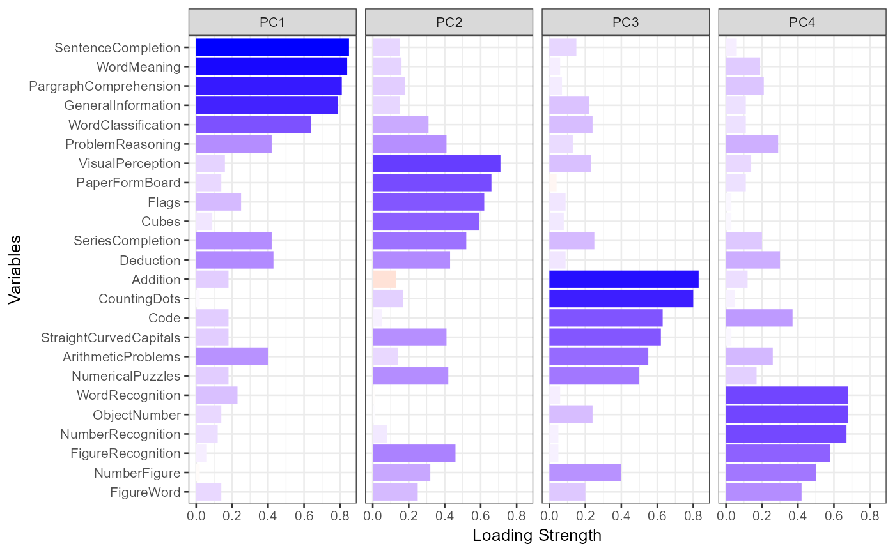
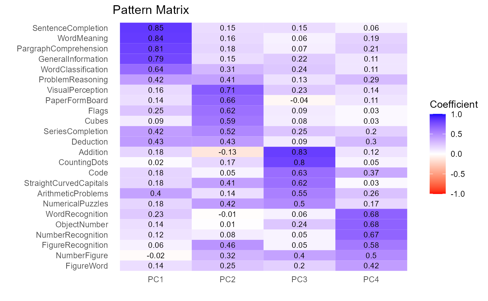

This function plots the pattern matrix for a principal components or common factor analysis solution
a ggplot2 graph
fit.pca <- PCA(Harman74.cor$cov, nfactors=4, rotate="varimax")
#>
#> Principal Components Analysis
#> Number of Factors: 4 Rotation: varimax
#>
#> Component Structure
#> PC1 PC2 PC3 PC4 h2
#> VisualPerception 0.16 0.71 0.23 0.14 0.60
#> Cubes 0.09 0.59 0.08 0.03 0.37
#> PaperFormBoard 0.14 0.66 -0.04 0.11 0.47
#> Flags 0.25 0.62 0.09 0.03 0.45
#> GeneralInformation 0.79 0.15 0.22 0.11 0.70
#> PargraphComprehension 0.81 0.18 0.07 0.21 0.73
#> SentenceCompletion 0.85 0.15 0.15 0.06 0.77
#> WordClassification 0.64 0.31 0.24 0.11 0.57
#> WordMeaning 0.84 0.16 0.06 0.19 0.78
#> Addition 0.18 -0.13 0.83 0.12 0.76
#> Code 0.18 0.05 0.63 0.37 0.57
#> CountingDots 0.02 0.17 0.80 0.05 0.67
#> StraightCurvedCapitals 0.18 0.41 0.62 0.03 0.59
#> WordRecognition 0.23 -0.01 0.06 0.68 0.52
#> NumberRecognition 0.12 0.08 0.05 0.67 0.48
#> FigureRecognition 0.06 0.46 0.05 0.58 0.55
#> ObjectNumber 0.14 0.01 0.24 0.68 0.54
#> NumberFigure -0.02 0.32 0.40 0.50 0.51
#> FigureWord 0.14 0.25 0.20 0.42 0.30
#> Deduction 0.43 0.43 0.09 0.30 0.47
#> NumericalPuzzles 0.18 0.42 0.50 0.17 0.49
#> ProblemReasoning 0.42 0.41 0.13 0.29 0.45
#> SeriesCompletion 0.42 0.52 0.25 0.20 0.55
#> ArithmeticProblems 0.40 0.14 0.55 0.26 0.55
#>
#> PC1 PC2 PC3 PC4
#> Variance 4.16 3.31 3.22 2.74
#> Var Explained 0.17 0.14 0.13 0.11
#> Cum Var Explained 0.17 0.31 0.45 0.56
plot(fit.pca, sort=TRUE)

plot(fit.pca, sort=TRUE, type="table")
